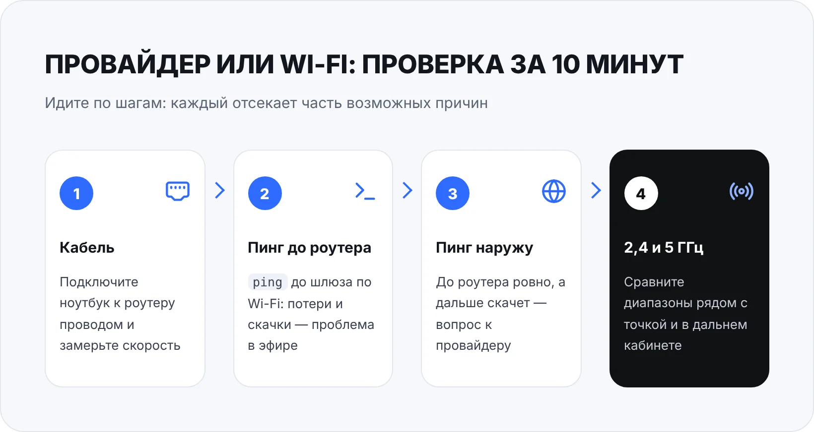
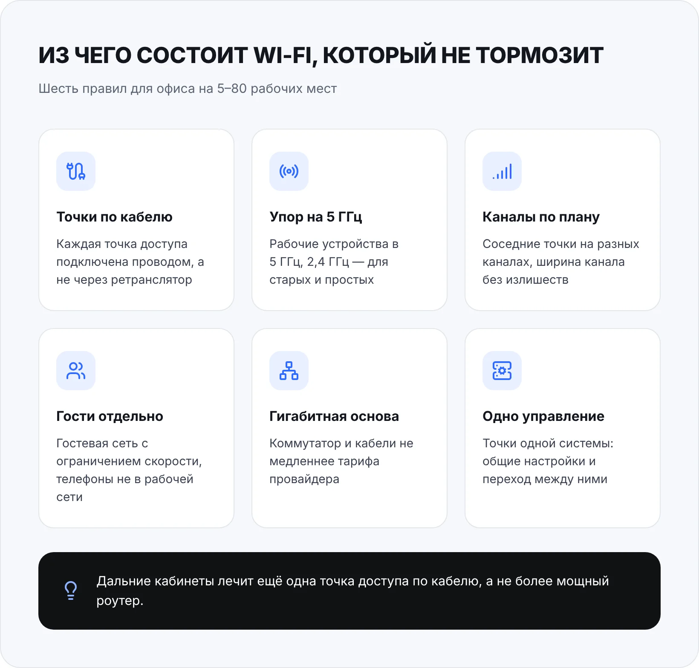

Почему тормозит Wi-Fi в офисе, если тариф у провайдера быстрый, а роутер куплен недавно? Чаще всего виноват не интернет, а сама беспроводная сеть: один домашний роутер на весь офис, перегруженный диапазон 2,4 ГГц, соседние сети на тех же каналах или устройства, которые забивают эфир. Хорошая новость — причину почти всегда можно найти за час, а исправить без покупки дорогого оборудования.
Ниже — как понять, что именно тормозит, как отличить проблему провайдера от проблемы Wi-Fi, десять частых причин, таблица «симптом → причина → что сделать» и чек-лист, который можно пройти самому.
Сначала поймите, что именно тормозит
«Wi-Fi тормозит» — это слишком общий диагноз. Прежде чем что-то менять, ответьте на четыре вопроса. Они сразу сужают круг причин.
- У всех или у одного? Если плохо только на одном ноутбуке, дело скорее в нём самом: драйвер, настройки энергосбережения, старый адаптер. Если у всех — в сети или канале провайдера.
- Везде или в отдельных кабинетах? Плохо только в дальних комнатах, в переговорной, за бетонной стеной — это покрытие и расположение точек.
- Всегда или в определённое время? Утром, когда все пришли и включили ноутбуки, в обед, когда смотрят видео, во время видеозвонков — это перегрузка точки или канала.
- Медленно или «рывками»? Низкая скорость скачивания и «лаги» — разные проблемы. Можно иметь 100 Мбит/с в тесте скорости и при этом рассыпающийся звонок, потому что связь то и дело прерывается на доли секунды.
Последний пункт стоит запомнить. Для работы в 1С через удалённый рабочий стол, видеосвязи и IP-телефонии важна не столько скорость в мегабитах, сколько стабильность: задержка (пинг), её разброс и потери пакетов. Тест скорости показывает только пропускную способность в момент замера и легко вводит в заблуждение.
Провайдер или Wi-Fi: как отличить за 10 минут
Самая частая ошибка — сразу звонить провайдеру или покупать новый роутер. Сначала проверьте, на каком участке теряется скорость. Для этого нужен один ноутбук с Windows и сетевой кабель.
- Шаг 1. Проверка по кабелю. Подключите ноутбук к роутеру проводом и сделайте тест скорости. Если и по кабелю медленно — Wi-Fi ни при чём: проблема в роутере или у провайдера.
- Шаг 2. Пинг до роутера по Wi-Fi. Узнайте адрес роутера: командная строка,
ipconfig, строка «Основной шлюз». Затем запустите длинный пинг, напримерping 192.168.1.1 -n 100(подставьте свой адрес). В исправной беспроводной сети ответы ровные, без потерь. Если время скачет до сотен миллисекунд или часть пакетов теряется — проблема в эфире между ноутбуком и точкой. - Шаг 3. Пинг наружу. Сделайте то же самое до любого крупного сайта, например
ping ya.ru -n 100. До роутера всё ровно, а дальше скачет — вопрос к провайдеру или к перегруженному каналу офиса. - Шаг 4. Сравнение диапазонов. Если роутер раздаёт 2,4 и 5 ГГц отдельными сетями, повторите тесты в каждой — рядом с точкой и в дальнем кабинете. Так видно, где сеть упирается в помехи, а где в расстояние.

Проводите проверку в то время, когда сеть обычно тормозит. Замер в пустом офисе вечером почти всегда покажет, что «всё нормально».
10 причин, почему тормозит Wi-Fi в офисе
1. Один домашний роутер на весь офис
Роутер из магазина электроники рассчитан на квартиру: несколько телефонов, телевизор, пара ноутбуков. В офисе к нему подключаются компьютеры сотрудников, их телефоны, принтеры, камеры, гости. Процессору роутера не хватает мощности, он греется, начинает терять соединения, а иногда просто зависает, и его «лечат» перезагрузкой. Если перезагрузка помогает на день-два — это почти наверняка тот самый случай.
2. Перегружен диапазон 2,4 ГГц
Диапазон 2,4 ГГц бьёт дальше и лучше проходит через стены, но он узкий: непересекающихся каналов в нём всего три (обычно 1, 6 и 11). В нём же работают Bluetooth, беспроводные мыши и клавиатуры, микроволновка на офисной кухне. Если рабочие ноутбуки сидят в 2,4 ГГц, хотя умеют работать в 5 ГГц, скорость и стабильность заметно страдают. Диапазон 5 ГГц шире, каналов в нём больше, помех меньше — но и сигнал затухает быстрее, особенно за капитальными стенами.
3. Соседние сети на тех же каналах
В бизнес-центре через стену работают десятки чужих сетей. Если ваша точка стоит на том же канале, что и соседские, устройства вынуждены делить эфир: пока передаёт одно, остальные ждут. Ситуацию усугубляет слишком широкий канал. Настройки «40 МГц на 2,4 ГГц» или «160 МГц на 5 ГГц» хорошо выглядят на коробке, но в плотном окружении чаще дают больше помех, чем скорости. Для офиса обычно надёжнее 20 МГц в 2,4 ГГц и 40–80 МГц в 5 ГГц.
4. Точка доступа стоит неудачно
Роутер в серверном шкафу, в углу за металлической стойкой, под столом у бухгалтера или на полу в кладовке — классика. Металл, бетон, зеркала, аквариумы и толстые стены сильно гасят сигнал. Чем дальше устройство от точки, тем ниже скорость, на которой оно может работать, и тем дольше оно занимает эфир для той же передачи. Точку стоит ставить высоко и ближе к центру зоны, где сидят люди, а не там, где удобно протянуть кабель провайдера.
5. Слишком много устройств на одну точку
Wi-Fi — общая среда: в каждый момент времени в одном канале передаёт одно устройство. Чем больше клиентов, тем меньше эфирного времени достаётся каждому. А одно старое или далеко сидящее устройство на низкой скорости занимает эфир дольше всех и тормозит остальных. Отсюда типичная картина: пока в офисе пять человек — всё летает, когда приходят двадцать — всё встаёт.
6. «Липкие» клиенты и нет роуминга между точками
Если в офисе несколько роутеров с разными настройками, ноутбук цепляется за ту точку, к которой подключился утром, и держится за неё, даже когда сотрудник ушёл в переговорную в другом конце коридора. В итоге он сидит на слабом сигнале, хотя рядом есть точка получше. Нормальная офисная система из нескольких точек одного производителя с общим управлением помогает устройствам переходить на ближайшую точку.
7. Репитеры и mesh «по воздуху»
Ретранслятор кажется простым решением для дальнего кабинета, но он принимает и передаёт данные в том же эфире, поэтому реальная скорость за ним заметно падает, а задержки растут. То же касается mesh-систем, если модули связаны между собой без кабеля. Там, где можно протянуть провод, надёжнее поставить ещё одну точку доступа, подключённую кабелем.
8. Чужой трафик забивает канал
Личные телефоны сотрудников, которые обновляют приложения и выгружают фото в облако, гости, смотрящие видео, облачная синхронизация папок, камеры видеонаблюдения, которые пишут в облако, — всё это делит один канал с рабочими задачами. Если гостевой сети нет или в ней не ограничена скорость, один посетитель с ноутбуком может заметно замедлить работу всего офиса.
9. Слабая проводная часть сети
Иногда тормозит вовсе не Wi-Fi. Точка доступа подключена к старому коммутатору на 100 Мбит/с, кабель повреждён или обжат с ошибкой и работает на пониженной скорости, порт роутера согласовался в режиме 100 Мбит/с вместо гигабита. Тогда сколько ни меняй беспроводное оборудование, выше потолка проводной части сеть не поднимется.
10. Устаревшее оборудование, прошивка или закончились адреса
Роутер, который работает без обновлений много лет, может содержать ошибки, из-за которых он теряет соединения под нагрузкой, — и уязвимости заодно. Отдельная история — пул адресов DHCP. В настройках роутера количество адресов, которые он раздаёт, может быть ограничено, например, полусотней. Когда к сети подключаются все телефоны, гости и устройства, адреса заканчиваются: новое устройство видит сеть, но «без доступа к интернету», а старые время от времени отваливаются.
Почему Wi-Fi отключается или тормозит на одном ноутбуке
Если у всех нормально, а у одного сотрудника сеть постоянно пропадает, начинайте с самого компьютера:
- Энергосбережение адаптера. Диспетчер устройств → «Сетевые адаптеры» → ваш Wi-Fi-адаптер → «Свойства» → вкладка «Управление электропитанием». Снимите галочку «Разрешить отключение этого устройства для экономии энергии». На ноутбуках это частая причина обрывов.
- Драйвер. Установите свежий драйвер беспроводного адаптера с сайта производителя ноутбука или адаптера, а не только тот, что поставила Windows автоматически.
- Старый профиль сети. Если роутер меняли или перенастраивали, удалите сеть: «Параметры» → «Сеть и Интернет» → «Wi-Fi» → «Управление известными сетями» → «Забыть», затем подключитесь заново.
- Старый адаптер. Ноутбук, который умеет работать только в 2,4 ГГц или только по старым стандартам, будет медленным в любом офисе. Для стационарного компьютера проще и надёжнее провести кабель.
Если после этих шагов проблема осталась, имеет смысл посмотреть сам компьютер целиком: перегрев, нехватка памяти и «тяжёлый» автозапуск тоже маскируются под «плохой интернет». Это обычная задача обслуживания компьютеров в офисе.
Симптом → причина → что сделать
Сведём частые ситуации в одну таблицу. Найдите свой симптом и начните с правой колонки.
| Симптом | Вероятная причина | Что сделать |
|---|---|---|
| Медленно у всех, и по кабелю тоже | Канал провайдера или перегруженный роутер | Замерить скорость по кабелю напрямую от провайдера, проверить загрузку роутера, обратиться к провайдеру |
| По кабелю быстро, по Wi-Fi медленно у всех | Помехи, неудачный канал, перегрузка точки | Перевести рабочие устройства в 5 ГГц, сменить канал, сузить ширину канала, разгрузить точку |
| Плохо только в дальних кабинетах | Не хватает покрытия, точка стоит неудачно | Перенести точку выше и ближе к центру или добавить ещё одну точку по кабелю |
| Всё тормозит утром и в обед | Много клиентов на одну точку, личный трафик | Вынести телефоны и гостей в отдельную сеть с ограничением скорости, добавить точки |
| Рвутся видеозвонки, хотя тест скорости хороший | Задержки и потери в эфире или у провайдера | Сделать длинный пинг до роутера и наружу, найти участок с потерями |
| После перезагрузки роутера всё работает день-два | Роутеру не хватает ресурсов, ошибки прошивки | Обновить прошивку, заменить бытовой роутер на оборудование для офиса |
| Новые устройства подключаются «без доступа к интернету» | Закончились адреса DHCP | Расширить пул адресов, вынести гостей в отдельную сеть |
| Отваливается только один ноутбук | Энергосбережение адаптера, драйвер, старый профиль | Отключить энергосбережение, обновить драйвер, «забыть» и заново подключить сеть |
| Около ретранслятора сигнал полный, а скорость низкая | Ретранслятор делит эфир с основной точкой | Заменить ретранслятор на точку доступа, подключённую кабелем |
Чек-лист: что проверить самому за час
Эти шаги не требуют покупки оборудования и доступны любому, у кого есть пароль от роутера:
- Сделать проверку по кабелю и длинный пинг до роутера и наружу — в «плохое» время дня.
- Посмотреть, сколько устройств подключено к роутеру (обычно есть в веб-интерфейсе), и найти лишние.
- Проверить, что рабочие ноутбуки подключены к сети 5 ГГц, если они её поддерживают.
- Посмотреть ширину канала: для 2,4 ГГц оставить 20 МГц.
- Проверить, на каких каналах работают соседние сети (подойдёт любое приложение-анализатор Wi-Fi для телефона), и выбрать наименее загруженный.
- Включить гостевую сеть для посетителей и личных телефонов, если роутер это умеет, и ограничить в ней скорость.
- Проверить, где стоит роутер: не в металлическом шкафу, не на полу, не за капитальной стеной от основной части офиса.
- Обновить прошивку роутера с сайта производителя.
- Посмотреть настройки DHCP: хватает ли адресов на все устройства с запасом.
- Убедиться, что точка доступа подключена к гигабитному порту и кабель не повреждён.
Меняйте по одной настройке за раз и проверяйте результат. Иначе непонятно, что помогло, а что испортило.
Как устроен Wi-Fi, который не тормозит
Если офис больше пары кабинетов, а сотрудников больше десяти, одной настройкой каналов обычно не обойтись. Рабочая беспроводная сеть строится по нескольким простым правилам.
Точек доступа столько, сколько нужно по площади и числу людей, и каждая подключена кабелем. Все точки — одной системы, с общими настройками, чтобы ноутбук переходил на ближайшую при перемещении по офису. Рабочие устройства живут в 5 ГГц, 2,4 ГГц остаётся для старой техники и устройств, которые иначе не умеют. Соседние точки стоят на разных каналах. Гостевая сеть и личные телефоны отделены от рабочей, а для гостей ограничена скорость. Проводная основа — коммутатор и кабели — не медленнее тарифа провайдера.

Стационарные компьютеры, принтеры и МФУ по возможности подключают проводом. Каждое такое устройство, ушедшее из эфира, освобождает его для ноутбуков и телефонов. Это же снимает часть проблем с печатью: принтер, который «то виден, то нет», часто просто плохо держит Wi-Fi.
Типичные ошибки, которые делают только хуже
- Второй домашний роутер «для усиления». Два роутера с двумя раздачами адресов дают конфликты, отдельные сети и «липкие» подключения. Добавлять нужно точку доступа в режиме точки доступа, а не второй роутер.
- Ретранслятор вместо кабеля. Решает проблему «нет сигнала», но не проблему «медленно».
- Переход на более дорогой тариф. Если узкое место — эфир или роутер, лишние мегабиты от провайдера до сотрудников просто не дойдут.
- Мощность передатчика на максимум. Точка «кричит» далеко, а телефоны и ноутбуки отвечают ей слабее. Устройство видит полный сигнал, но связь нестабильна. В офисе с несколькими точками мощность обычно, наоборот, снижают.
- Самый широкий канал «для скорости». В плотном окружении широкий канал ловит больше помех и чаще пересекается с соседями.
- Один пароль от Wi-Fi для всех с первого дня работы офиса. К сети годами подключаются бывшие сотрудники, гости и их устройства — это и нагрузка, и риск для безопасности.
Когда звать специалиста и что он сделает
Самостоятельных проверок достаточно, если причина одна и очевидная: неудачный канал, роутер в шкафу, нет гостевой сети. Позвать специалиста стоит, если:
- проблемы повторяются после всех настроек из чек-листа;
- в офисе больше одной точки доступа или несколько этажей;
- тормозит работа в 1С, удалённый рабочий стол или телефония, и непонятно, сеть это или сервер;
- нужно переделать сеть под переезд, расширение офиса или новое оборудование;
- никто в компании не знает пароля от роутера и того, как устроена сеть.
Инженер проверяет канал провайдера и проводную часть, смотрит загрузку оборудования, обследует эфир по кабинетам, подбирает каналы и мощность, разделяет рабочую и гостевую сети, а если нужно — предлагает, где поставить точки доступа и какие, без лишних покупок. По итогам вы получаете понятную схему сети и пароли, которые хранятся у вас.
Наша компания занимается настройкой сети и Wi-Fi для офиса в Оренбурге: диагностика бесплатна, разовый вызов — от 1 500 ₽, выезжаем в день обращения. Если не хочется каждый раз разбираться с поломками по отдельности, сеть можно взять на ИТ-аутсорсинг — от 15 000 ₽ в месяц, с бесплатным аудитом за один день на старте.
Частые вопросы
Почему тормозит Wi-Fi в офисе, если тест скорости показывает хорошие цифры?
Тест скорости измеряет пропускную способность в один момент и не показывает задержки и потери пакетов. Для звонков, удалённого рабочего стола и 1С важнее стабильность. Сделайте длинный пинг до роутера и до внешнего сайта: скачки и потери покажут, где проблема.
Поможет ли более мощный роутер?
Иногда да — если бытовой роутер не справляется с количеством устройств. Но если офис большой или много стен, один даже очень мощный роутер не закроет все кабинеты: телефоны и ноутбуки всё равно отвечают ему слабым сигналом. Надёжнее несколько точек доступа, подключённых кабелем.
Что лучше для офиса: 2,4 или 5 ГГц?
Для рабочих ноутбуков и телефонов — 5 ГГц: там больше каналов и меньше помех. 2,4 ГГц стоит оставить для старых устройств и техники, которая не поддерживает 5 ГГц. Чтобы 5 ГГц хватало на весь офис, точек обычно нужно больше, потому что сигнал хуже проходит через стены.
Нужна ли отдельная гостевая сеть?
Да. Гостевая сеть не даёт посетителям доступа к компьютерам, принтерам и папкам офиса, а ограничение скорости в ней не позволяет одному гостю занять весь канал. Туда же удобно подключать личные телефоны сотрудников.
Сколько стоит разобраться, почему тормозит Wi-Fi?
Диагностика у нас бесплатная, разовый вызов специалиста — от 1 500 ₽, выезд в день обращения по Оренбургу. Итоговая стоимость зависит от того, что найдём: часто хватает перенастройки без покупки оборудования.